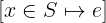
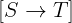

Functions
Contributors: @konnov, @shonfeder, @Kukovec, @Alexander-N
Functions are probably the second most used TLA+ data structure after sets. TLA+
functions are not like functions in programming languages. In programming
languages, functions contain code that calls other functions. Although it is
technically possible to use functions when constructing a function in TLA+,
functions are more often used like tables or dictionaries: they are simple maps
from a set of inputs to a set of outputs.
For instance, in Two-phase commit, the function rmState
stores the transaction state for each process:
| argument | rmState[argument] |
|---|---|
| “process1” | “working” |
| “process2” | “aborted” |
| “process3” | “prepared” |
In the above table, the first column is the value of the function argument, while the second column is the function result. An important property of this table is that no value appears in the first column more than once, so every argument value is assigned at most one result value.
Importantly, every function is defined in terms of the set of arguments over which it is
defined. This set is called the function’s domain. There is even a special
operator DOMAIN f, which returns the domain of a function f.
In contrast to TLA+ operators, TLA+ functions are proper values, so they can be used as values in more complex data structures.
Construction. Typically, the predicate Init constructs a function that
maps all elements of its domain to a default value.
In the example below we map the set { "process1", "process2", "process3" }
to the value “working”:
Init ==
rmState = [ p \in { "process1", "process2", "process3" } |-> "working" ]
In general, we can construct a function by giving an expression that shows us how to map every argument to the result:
[ fahrenheit \in Int |-> (fahrenheit - 32) * 5 \div 9 ]
Note that this function effectively defines an infinite table, as the set Int
is infinite. Both TLC and Apalache would give up on a function with an infinite
domain. (Though in the above example, it is obvious that we could treat the
function symbolically, without enumerating all of its elements.)
Another way to construct a function is to non-deterministically pick one
from a set of functions by using the function set constructor, ->. E.g.:
Init ==
\E f \in [ { "process1", "process2", "process3" } ->
{ "working", "prepared", "committed", "aborted" } ]:
rmState = f
In the above example, we are not talking about one function that is somehow
initialized “by default”. Rather, we say that rmState can be set to an
arbitrary function that receives arguments from the set { "process1", "process2", "process3" } and returns values that belong to the set { "working", "prepared", "committed", "aborted" }. As a result, TLC has to
enumerate all possible functions that match this constraint. On the contrary,
Apalache introduces one instance of a function and restricts it with the
symbolic constraints. So it efficiently considers all possible functions
without enumerating them. However, this trick only works with existential
quantifiers. If you use a universal quantifier over a set of functions,
both TLC and Apalache unfold this set.
Immutability. As you can see, TLA+ functions are similar to dictionaries in Python and maps in Java rather than to normal functions in programming languages. However, TLA+ functions are immutable. Hence, they are even closer to immutable maps in Scala. As in the case of sets, you do not need to define hash or equality, in order to use functions.
If you want to update a function, you have to produce another function and
describe how it is different from the original function. Luckily, TLA+ provides
you with operators for describing these updates in a compact way: By using the
function constructor (above) along with EXCEPT. For instance, to produce a
new function from rmState, we write the following:
[ rmState EXCEPT !["process3"] = "committed" ]
This new function is like rmState, except that it returns "committed"
on the argument "process3":
"process1", "working"
"process2", "aborted"
"process3", "committed"
Importantly, you cannot extend the function domain by using EXCEPT.
For instance, the following expression produces the function that is
equivalent to rmState:
[ rmState EXCEPT !["process10"] = "working" ]
Types. In pure TLA+, functions are free to mix values of different types in their domains. See the example below:
[ x \in { 0, "FALSE", FALSE, 1, "TRUE", TRUE } |->
IF x \in { 1, "TRUE", TRUE}
THEN TRUE
ELSE FALSE
]
TLA+ functions are also free to return any kinds of values:
[ x \in { 0, "FALSE", FALSE, 1, "TRUE", TRUE } |->
CASE x = 0 -> 1
[] x = 1 -> 0
[] x = "FALSE" -> "TRUE"
[] x = "TRUE" -> "FALSE"
[] x = FALSE -> TRUE
OTHER -> FALSE
]
As in the case of sets, TLC restricts function domains to comparable values. See Section 14.7.2 of Specifying Systems. So, TLC rejects the two examples that are given above.
However, functions in TLC are free to return different kinds of values:
[ x \in { 1, 2 } |->
IF x = 1 THEN FALSE ELSE 3 ]
This is why, in pure TLA+ and TLC, records, tuples, and sequences are just functions over particular domains (finite sets of strings and finite sets of integers).
Apalache enforces stricter types. It has designated types for all four
data structures: general functions, records, tuples, and sequences.
Moreover, all elements of the function domain must have the same type.
The same is true for the codomain. That is, general functions have the
type a -> b for some types a and b. This is enforced
by the type checker.
In this sense, the type restrictions of Apalache are similar to those for the generic collections of Java and Scala. As a result, the type checker in Apalache rejects the three above examples.
TLA+ functions and Python dictionaries. As we mentioned before, TLA+
functions are similar to maps and dictionaries in programming languages. To
demonstrate this similarity, let us compare TLA+ functions with Python
dictionaries. Consider a TLA+ function price that is defined as follows:
[ meal \in { "Schnitzel", "Gulash", "Cordon bleu" } |->
CASE meal = "Schnitzel" -> 18
[] meal = "Gulash" -> 11
[] meal = "Cordon bleu" -> 12
]
If we had to define a similar dictionary in Python, we would normally introduce a Python dictionary like follows:
py_price = { "Schnitzel": 18, "Gulash": 11, "Cordon bleu": 12 }
As long as we are using the variable py_price to access the dictionary, our
approach works. For instance, we can type the following in the python shell:
# similar to DOMAIN price in TLA+
py_price.keys()
In the above example, we used py_price.keys(), which produces a view of the
mutable dictionary’s keys. In TLA+, DOMAIN returns a set. If we want to
faithfully model the effect of DOMAIN, then we have to produce an immutable
set. We use
frozenset,
which is a less famous cousin of the python set. A frozen set can be
inserted into another set, in contrast to the standard (mutable) set.
>>> py_price = { "Schnitzel": 18, "Gulash": 11, "Cordon bleu": 12 }
>>> frozenset(py_price.keys()) == frozenset({'Schnitzel', 'Gulash', 'Cordon bleu'})
True
We can also apply our python dictionary similar to the TLA+ function price:
>>> # similar to price["Schnitzel"] in TLA+
>>> py_price["Schnitzel"]
18
However, there is a catch! What if you like to put the function price in a
set? In TLA+, this is easy: Simply construct the singleton set that contains
the function price.
# TLA+: wrapping a function with a set
{ price }
Unfortunately, this does not work as easy in Python:
>>> py_price = { "Schnitzel": 18, "Gulash": 11, "Cordon bleu": 12 }
>>> # python expects hashable and immutable data structures inside sets
>>> frozenset({py_price})
Traceback (most recent call last):
File "<stdin>", line 1, in <module>
TypeError: unhashable type: 'dict'
Of course, this is an implementation detail of Python, and it has nothing to do with TLA+. This example probably demonstrates that the built-in primitives of TLA+ are more powerful than the standard primitives of many programming languages (see this discussion).
Alternatively, we could represent a TLA+ function in Python as a set
of pairs (key, value) and implement TLA+ function operators over such a
set. Surely, this implementation would be inefficient, but this is not
an issue for a specification language such as TLA+. For instance:
>>> py_price = { "Schnitzel": 18, "Gulash": 11, "Cordon bleu": 12 }
>>> { tuple(py_price.items()) }
{(('Schnitzel', 18), ('Gulash', 11), ('Cordon bleu', 12))}
If we try to implement TLA+-like operators over this data structure, things will get complicated very quickly. For this reason, we are just using mutable dictionaries in the Python examples in the rest of this text.
Operators
Function constructor
Notation: [ x \in S |-> e ] or [ x \in S, y \in T |-> e ], or more
arguments
LaTeX notation:

Arguments: At least three arguments: a variable name (or a tuple of names, see Advanced syntax), a set, and a mapping expression. Instead of one variable and one set, you can use multiple variables and multiple sets.
Apalache type: The formal type of this operator is a bit complex. Hence, we give an informal description:
xhas the typea, for some typea,Shas the typeSet(a),ehas the typeb, for some typeb,- the expression
[ x \in S |-> e ]has the typea -> b.
Effect: We give the semantics for one argument. We write a sequence of
steps to ease the understanding. This operator constructs a function f over
the domain S as follows. For every element elem of S, do the following:
- Bind the element
elemto variablex, - Compute the value of
eunder the binding[x |-> elem]and store it in a temporary variable calledresult. - Set
f[elem]toresult.
Of course, the semantics of the function constructor in Specifying Systems does not require us to compute the function at all. We believe that our description helps you to see that there is a way to compute this data structure, though in a very straightforward and inefficient way.
If the function constructor introduces multiple variables, then the constructed function maps a tuple to a value. See Example.
Determinism: Deterministic.
Errors: Pure TLA+ does not restrict the function domain and the mapping expression. They can be any combination of TLA+ values: Booleans, integers, strings, sets, functions, etc.
TLC accepts function domains of comparable values. For instance, two integers are comparable, but an integer and a set are not comparable. See Section 14.7.2 of Specifying Systems.
Apalache goes further: It requires the function domain to be well-typed (as a
set), and it requires the mapping expression e to be well-typed. If this
is not the case, the type checker flags an error.
Advanced syntax: Instead of a single variable x, one can use the tuple
syntax to unpack variables from a Cartesian product, see Tuples.
For instance, one can write [ <<x, y>> \in S |-> x + y ]. In this case, for
every element e of S, the variable x is bound to e[1] and y is bound
to e[2]. The function constructor maps the tuples from S to the values
that are computed under such a binding.
Example in TLA+:
[ x \in 1..3 |-> 2 * x ] \* a function that maps 1, 2, 3 to 2, 4, 6
[ x, y \in 1..3 |-> x * y ]
\* a function that maps <<1, 1>>, <<1, 2>>, <<1, 3>>, ..., <<2, 3>>, <<3, 3>>
\* to 1, 2, 3, ..., 6, 9
[ <<x, y>> \in (1..3) \X (4..6) |-> x + y ]
\* a function that maps <<1, 4>>, <<1, 5>>, <<1, 6>>, ..., <<2, 6>>, <<3, 6>>
\* to 5, 6, 7, ..., 8, 9
[ n \in 1..3 |->
[ i \in 1..n |-> n + i ]]
\* a function that maps a number n from 1 to 3
\* to a function from 1..n to n + i. Like an array of arrays.
Example in Python:
In the following code, we write range(m, n) instead of frozenset(range(m, n)) to simplify the presentation and produce idiomatic Python code. In the
general case, we have to iterate over a set, as the type and structure of the
function domain is not known in advance.
>>> # TLA: [ x \in 1..3 |-> 2 * x ]
>>> {x: 2 * x for x in range(1, 4)}
{1: 2, 2: 4, 3: 6}
>>> # TLA: [ x, y \in 1..3 |-> x * y ]
>>> {(x, y): x * y for x in range(1, 4) for y in range(1, 4)}
{(1, 1): 1, (1, 2): 2, (1, 3): 3, (2, 1): 2, (2, 2): 4, (2, 3): 6, (3, 1): 3, (3, 2): 6, (3, 3): 9}
>>> # TLA: [ <<x, y>> \in (1..3) \X (4..6) |-> x + y ]
>>> xy = {(x, y) for x in range(1, 4) for y in range(4, 7)}
>>> {(x, y): x + y for (x, y) in xy}
{(2, 4): 6, (3, 4): 7, (1, 5): 6, (1, 4): 5, (2, 6): 8, (3, 6): 9, (1, 6): 7, (2, 5): 7, (3, 5): 8}
>>> # TLA: [ n \in 1..3 |->
>>> # [ i \in 1..n |-> n + i ]]
>>> {
... n: {i: n + i for i in range(1, n + 1)}
... for n in range(1, 4)
... }
{1: {1: 2}, 2: {1: 3, 2: 4}, 3: {1: 4, 2: 5, 3: 6}}
Function set constructor
Notation: [ S -> T ]
LaTeX notation:

Arguments: Two arguments. Both have to be sets. Otherwise, the result is undefined.
Apalache type: (Set(a), Set(b)) => Set(a -> b), for some types a and b.
Effect: This operator constructs the set of all possible functions that
have S as their domain, and for each argument x \in S return a value y \in T.
Note that if one of the sets is infinite, then the set [S -> T] is infinite
too. TLC flags an error, if S or T are infinite. Apalache flags an error,
if S is infinite, but when it does not have to explicitly construct [S -> T], it may accept infinite T. For instance:
\E f \in [ 1..3 -> 4..6]:
...
Determinism: Deterministic.
Errors: In pure TLA+, if S and T are not sets, then [S -> T]
is undefined. If either S or T is not a set, TLC flags a model checking error.
Apalache flags a static type error.
Example in TLA+:
[ 1..3 -> 1..100 ]
\* the set of functions that map 1, 2, 3 to values from 1 to 100
[ Int -> BOOLEAN ]
\* The infinite set of functions that map every integer to a Boolean.
\* Error in TLC.
Example in Python: We do not give here the code that enumerates all
functions. It should be similar in spirit to subset.py,
but it should enumerate strings over the alphabet of 0..(Cardinality(T) - 1)
values, rather than over the alphabet of 2 values.
Function application
Notation: f[e] or f[e_1, ..., e_n]
LaTeX notation: f[e] or f[e_1, ..., e_n]
Arguments: At least two arguments. The first one should be a function,
the other arguments are the arguments to the function. Several arguments
are treated as a tuple. For instance, f[e_1, ..., e_n] is shorthand for
f[<<e_1, ..., e_n>>].
Apalache type: In the single-index case, the type is
((a -> b), a) => b, for some types a and b. In the multi-index case,
the type is ((<<a_1, ..., a_n>> -> b), a_1, ..., a_n) => b.
Effect: This operator is evaluated as follows:
- If
e \in DOMAIN f, thenf[e]evaluates to the value that functionfassociates with the value ofe. - If
e \notin DOMAIN f, then the value is undefined.
Determinism: Deterministic.
Errors: When e \notin DOMAIN f, TLC flags a model checking error.
When e has a type incompatible with the type of DOMAIN f, Apalache flags
a type error. When e \notin DOMAIN f, Apalache assigns some type-compatible
value to f[e], but does not report any error. This is not a bug in Apalache,
but a feature of the SMT encoding. Usually, illegal access surfaces
somewhere when checking a specification. If you want to detect access
outside the function domain, instrument your code with an additional state
variable.
Example in TLA+:
[x \in 1..10 |-> x * x][5] \* 25
[x \in 1..3, y \in 1..3 |-> x * y][2, 2]
\* Result = 4. Accessing a two-dimensional matrix by a pair
[ n \in 1..3 |->
[ i \in 1..n |-> n + i ]][3][2]
\* The first access returns a function, the second access returns 5.
[x \in 1..10 |-> x * x][100] \* model checking error in TLC,
\* Apalache produces some value
Example in Python:
In the following code, we write range(m, n) instead of frozenset(range(m, n)) to simplify the presentation and produce idiomatic Python code. In the
general case, we have to iterate over a set, as the type and structure of the
function domain is not known in advance.
>>> # TLA: [x \in 1..10 |-> x * x][5]
>>> {x: x * x for x in range(1, 11)}[5]
25
>>> # TLA: [x, y \in 1..3 |-> x * y][2, 2]
>>> {(x, y): x * y for x in range(1, 4) for y in range(1, 4)}[(2, 2)]
4
>>> # TLA: [ n \in 1..3 |-> [ i \in 1..n |-> n + i ]][3][2]
>>> {n: {i: n + i for i in range(1, n + 1)} for n in range(1, 4)}[3][2]
5
Function replacement
Notation: [f EXCEPT ![a_1] = e_1, ..., ![a_n] = e_n]
LaTeX notation: [f EXCEPT ![a_1] = e_1, ..., ![a_n] = e_n]
Arguments: At least three arguments. The first one should be a function, the other arguments are interleaved pairs of argument expressions and value expressions.
Apalache type: In the case of a single-point update, the type is simple:
(a -> b, a, b) => (a -> b), for some types a and b. In the general case,
the type is: (a -> b, a, b, ..., a, b) => (a -> b).
Effect: This operator evaluates to a new function g that is constructed
as follows:
- Set the domain of
gtoDOMAIN f. - For every element
b \in DOMAIN f, do:- If
b = a_ifor somei \in 1..n, then setg[b]toe_i. - If
b \notin { a_1, ..., a_n }, then setg[b]tof[b].
- If
Importantly, g is a new function: the function f is not modified!
Determinism: Deterministic.
Errors: When a_i \notin DOMAIN f for some i \in 1..n,
TLC flags a model checking error.
When a_1, ..., a_n are not type-compatible with the type of DOMAIN f,
Apalache flags a type error. When a_i \notin DOMAIN f, Apalache ignores this
argument. This is consistent with the semantics of TLA+ in Specifying Systems.
Advanced syntax: There are three extensions to the basic syntax.
Extension 1. If the domain elements of a function f are tuples, then, similar to
function application, the expressions a_1, ..., a_n can be written without
the tuple braces <<...>>. For example:
[ f EXCEPT ![1, 2] = e ]
In the above example, the element f[<<1, 2>>] is replaced with e.
As you can see, this is just syntax sugar.
Extension 2. The operator EXCEPT introduces an implicit alias @
that refers to the element f[a_i] that is going to be replaced:
[ f EXCEPT ![1] = @ + 1, ![2] = @ + 3 ]
In the above example, the element f[1] is replaced with f[1] + 1, whereas
the element f[2] is replaced with f[2] + 3.
This is also syntax sugar.
Extension 3. The advanced syntax of EXCEPT allows for chained replacements.
For example:
[ f EXCEPT ![a_1][a_2]...[a_n] = e ]
This is syntax sugar for:
[ f EXCEPT ![a_1] =
[ @ EXCEPT ![a_2] =
...
[ @ EXCEPT ![a_n] = e ]]]
Example in TLA+:
LET f1 == [ p \in 1..3 |-> "working" ] IN
[ f1 EXCEPT ![2] = "aborted" ]
\* a new function that maps: 1 to "working", 2 to "aborted", 3 to "working"
LET f2 == [x \in 1..3, y \in 1..3 |-> x * y] IN
[ f2 EXCEPT ![1, 1] = 0 ]
\* a new function that maps:
\* <<1, 1>> to 0, and <<x, y>> to x * y when `x /= 0` or `y /= 0`
LET f3 == [ n \in 1..3 |-> [ i \in 1..n |-> n + i ]] IN
[ f3 EXCEPT ![2][2] = 100 ]
\* a new function that maps:
\* 1 to the function that maps: 1 to 2
\* 2 to the function that maps: 1 to 3, 2 to 100
\* 3 to the function that maps: 1 to 4, 2 to 5, 3 to 6
Example in Python:
In the following code, we write range(m, n) instead of frozenset(range(m, n)) to simplify the presentation and produce idiomatic Python code. In the
general case, we have to iterate over a set, as the type and structure of the
function domain is not known in advance. Additionally, given a Python
dictionary f, we write f.items() to quickly iterate over the pairs of keys
and values. Had we wanted to follow the TLA+ semantics more precisely, we would
have to enumerate over the keys in the function domain and apply the function to
each key, in order to obtain the value that is associated with the key. This
code would be less efficient than the idiomatic Python code.
>>> # TLA: LET f1 == [ p \in 1..3 |-> "working" ] IN
>>> f1 = {i: "working" for i in range(1, 4)}
>>> f1
{1: 'working', 2: 'working', 3: 'working'}
>>> # TLA: [ f1 EXCEPT ![2] = "aborted" ]
>>> g1 = {i: status if i != 2 else "aborted" for i, status in f1.items()}
>>> g1
{1: 'working', 2: 'aborted', 3: 'working'}
>>> # TLA: LET f2 == [x, y \in 1..3 |-> x * y] IN
>>> f2 = {(x, y): x * y for x in range(1, 4) for y in range(1, 4)}
>>> # TLA: [ f2 EXCEPT ![1, 1] = 0
>>> g2 = {k: v if k != (1, 1) else 0 for k, v in f2.items()}
>>> g2
{(1, 1): 0, (1, 2): 2, (1, 3): 3, (2, 1): 2, (2, 2): 4, (2, 3): 6, (3, 1): 3, (3, 2): 6, (3, 3): 9}
>>> # TLA: [ n \in 1..3 |-> [ i \in 1..n |-> n + i ]]
>>> f3 = {n: {i: n + i for i in range(1, n + 1)} for n in range(4)}
>>> # TLA: [ f3 EXCEPT ![2][2] = 100 ]
>>> g3 = f3.copy()
>>> g3[2][2] = 100
>>> g3
{0: {}, 1: {1: 2}, 2: {1: 3, 2: 100}, 3: {1: 4, 2: 5, 3: 6}}
Function domain
Notation: DOMAIN f
LaTeX notation: DOMAIN f
Arguments: One argument, which should be a function (respectively, a record, tuple, sequence).
Apalache type: (a -> b) => Set(a).
Effect: DOMAIN f returns the set of values, on which the function
has been defined, see: Function constructor and Function set constructor.
Determinism: Deterministic.
Errors: In pure TLA+, the result is undefined, if f is not a function
(respectively, a record, tuple, or sequence). TLC flags a model checking error
if f is a value that does not have a domain. Apalache flags a type checking
error.
Example in TLA+:
LET f == [ x \in 1..3 |-> 2 * x ] IN
DOMAIN f \* { 1, 2, 3 }
Example in Python:
In the following code, we write range(m, n) instead of frozenset(range(m, n)) to simplify the presentation and produce idiomatic Python code. In the
general case, we have to iterate over a set, as the type and structure of the
function domain is not known in advance.
>>> f = {x: 2 * x for x in range(1, 4)}
>>> f.keys()
dict_keys([1, 2, 3])
In the above code, we write f.keys() to obtain an iterable over the
dictionary keys, which can be used in a further python code. In a more
principled approach that follows the semantics of TLA+, we would have to
produce a set, that is to write:
frozenset(f.keys())